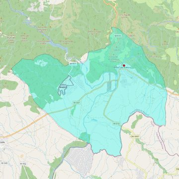

San Pedro Apóstol
- Arciprestazgo
- Navalcarnero
- Población
- Aldea del Fresno
- Dirección postal
- c/ Párroco Fernando Agudo Maroto, 3
- Código postal
- 28620
- Extensión
- 51,65 km² (5.165 ha)
- Teléfono
- 916 837 027
- Correo electrónico
- sanpedroapostol-aldeadelfresno@diocesisgetafe.es
- Información demográfica
- De la parroquia · De la población (Aldea del Fresno) · Del arciprestazgo (Navalcarnero)
- Dirección corta
- charlie-diaz-azarola.github.io/geoestadistica/p/009


Descargar mapaLímites según decreto
Los del término municipal
¿Algún dato de esta parroquia es incorrecto o ha cambiado? Comuníquenoslo.